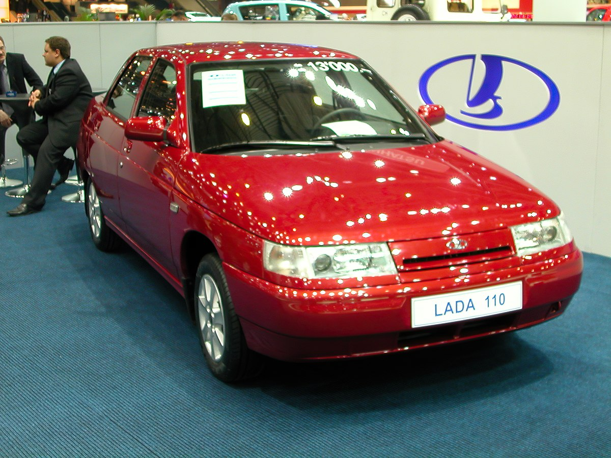
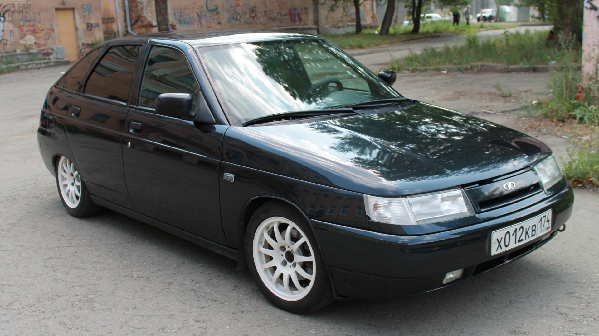
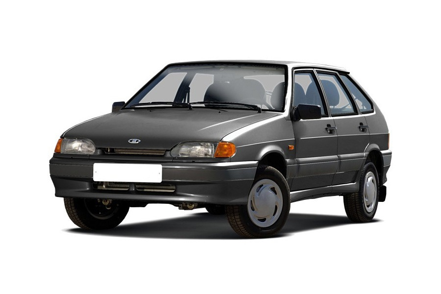
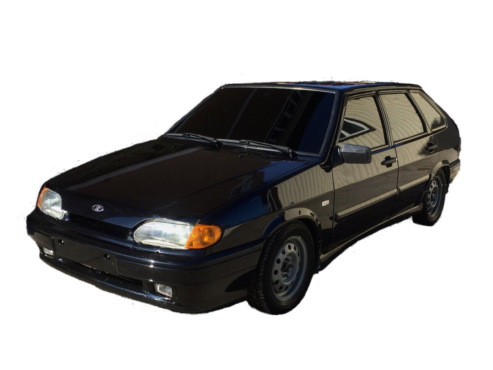
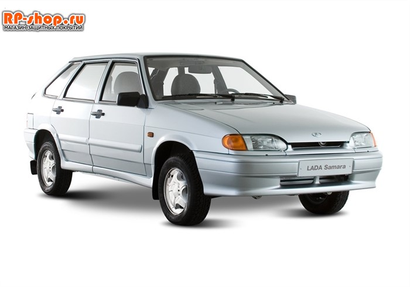
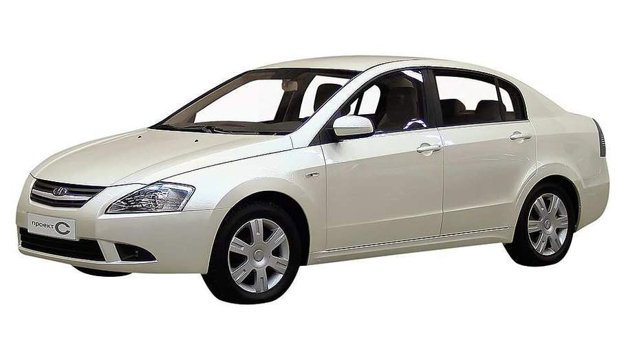
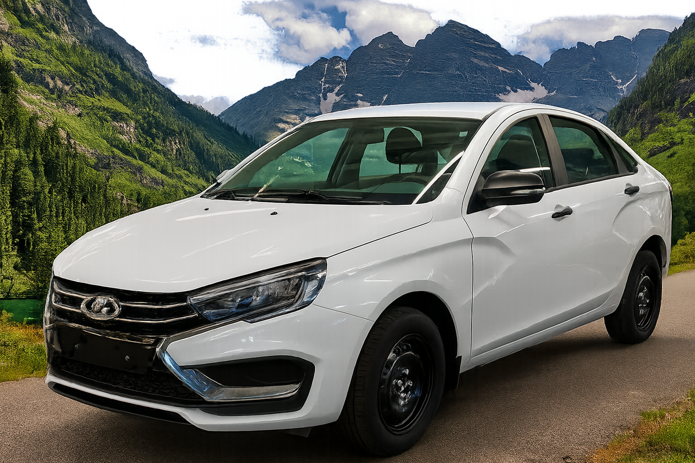
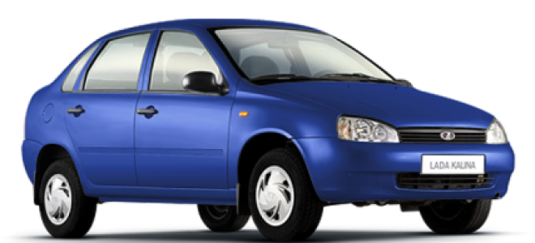
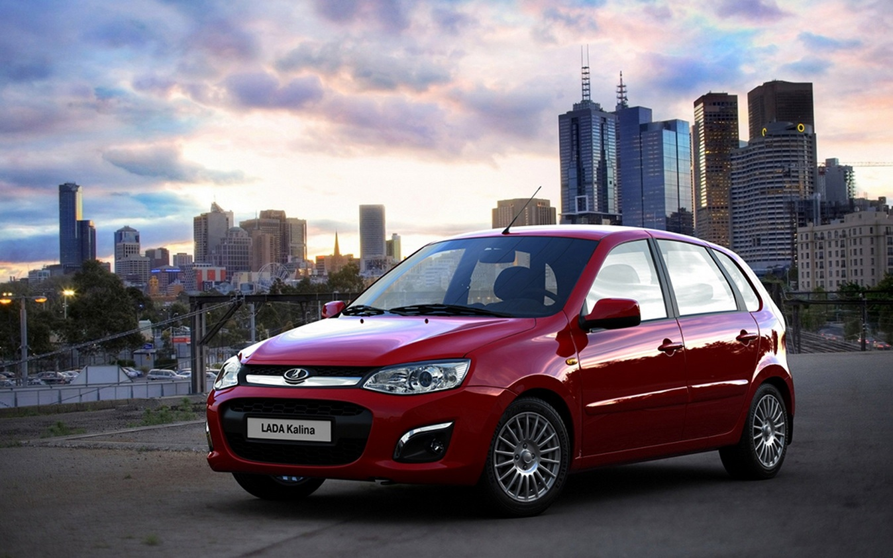

ВАЗ 2110 четырёхдверный переднеприводной седан российской компании «АвтоВАЗ».

ВАЗ 2112 российский легковой автомобиль производства Волжского автомобильного завода, пятидверный хэтчбек.

ВАЗ 2113 трёхдверный хэтчбек, рестайлинговая версия автомобиля ВАЗ-2108. Выпускался на «АвтоВАЗе» с 2004 по 2013 год.

ВАЗ 2114 пятидверный хэтчбек Волжского автомобильного завода, рестайлинговая версия ВАЗ-2109, продолжение семейства под условным названием «Самара-2».

ВАЗ 2108 советский и российский переднеприводный автомобиль малого класса с кузовом типа трёхдверный хетчбэк.

ВАЗ 2116 концепт-кар, переднеприводный седан на платформе Проекта С, разработанный «АвтоВАЗом» совместно с канадской компанией Magna International.

ВАЗ 2117 («Силуэт-Универсал») — концептуальный автомобиль с 5-дверным кузовом типа универсал, построенный на платформе «Проекта С».

ВАЗ 2118 экспериментальный хэтчбек, который входил в семейство «Лада Силуэт», построенное на платформе LADA B/C.

ВАЗ 2115 субкомпактный переднеприводной автомобиль с кузовом типа седан, разработанный Волжским автомобильным заводом.